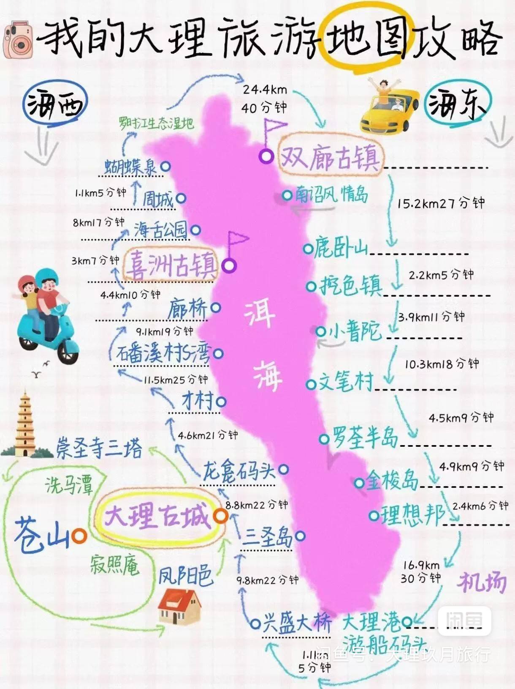
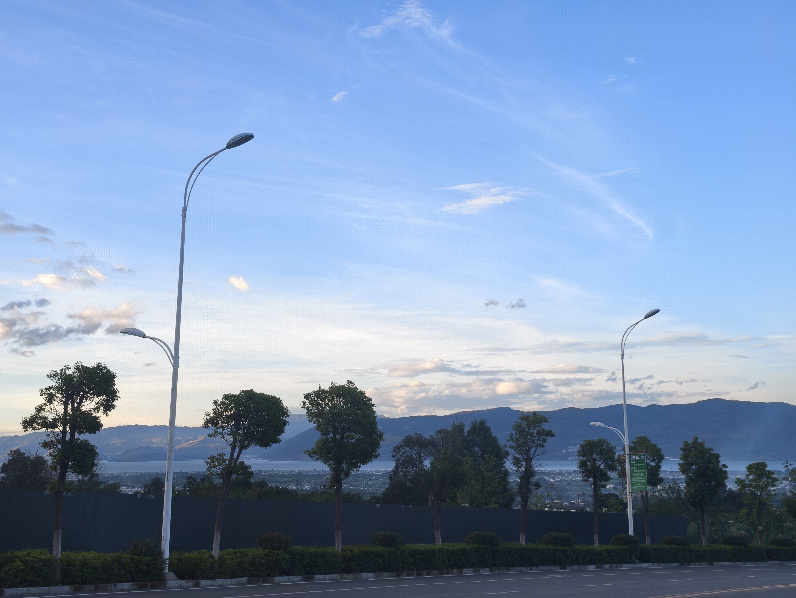
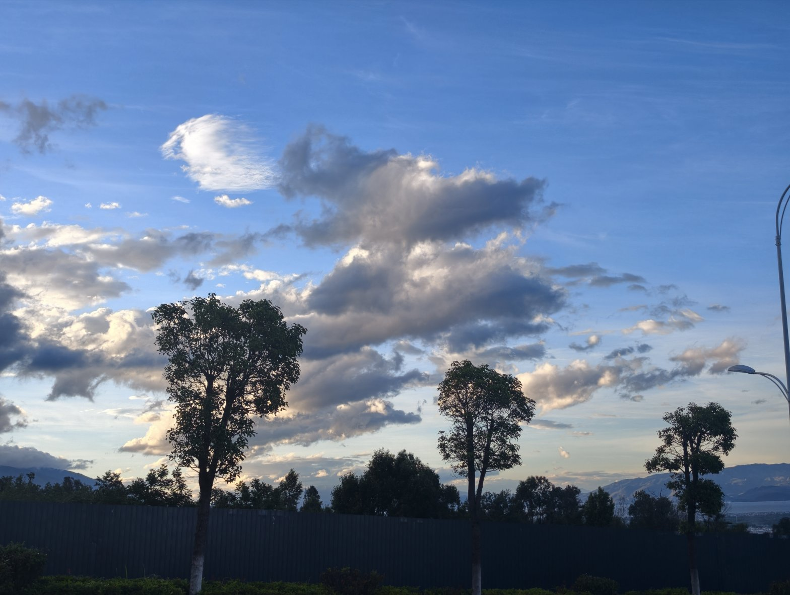
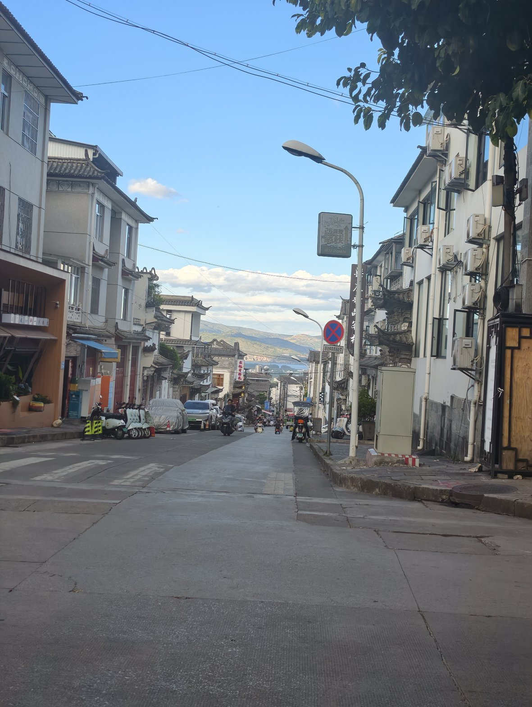
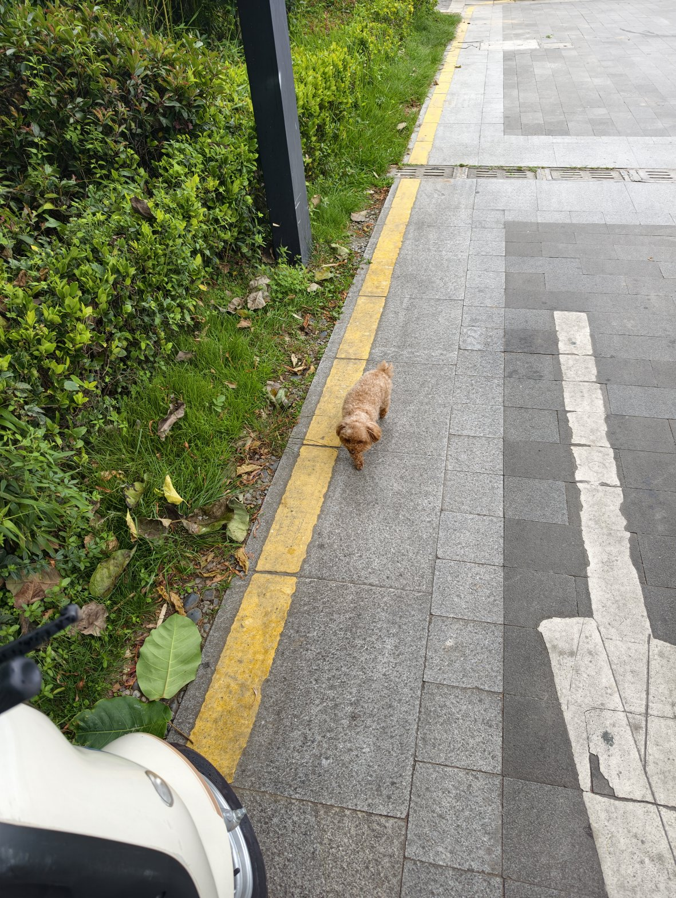
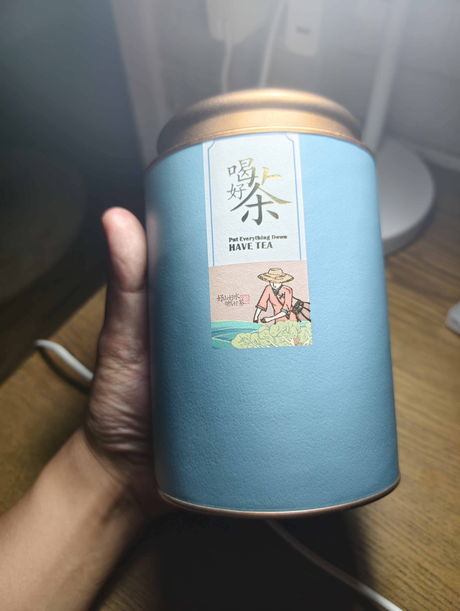

← 返回日记列表
2026年6月22日
📍 大理市, 云南省
🌤️ 天气
☁️ 阴 / 阵雨
🌡️ 28℃ / 17℃
🌬️ 西风 3-4级
📖 今日读书
老舍先生的幽默集锦散文
今天还是没有动 😅
✍️ 今日感悟
还车
：因为撞车的缘故多花了50块修车。好烦！不过不影响心情——原本车商要扣400块押金，我用50块修车搞定了，所以不算亏太多 😄
带Simon侄女攻略
：明天就要带Simon的侄女去逛大理了，今天晚上做了攻略 📋
新知识
：学到了点茶理，肠胃不好的人多喝熟普，因为发酵过了，对人的肠胃刺激性不大，相对于生普。还买了些糯米熟普茶，挺好喝的 🍵
🍽️ 今日美食分享
发酵的康普茶
- 好喝！
糯米熟普茶
- 挺好喝的，买了一些
📷 今日照片

大理旅行攻略图

弘圣路下坡美景

大理的云

大理古城南门附近

这狗子叫八月

糯香熟普茶
#美景
#美食
#茶
#旅游